1 · Live previews (phone and desktop)
Both servers bind 0.0.0.0 and are exposed by the Arena preview panel. On your Android phone open the public preview host of this sandbox: https://<port>-<sandbox-id>.e2b.app (the exact links are shown next to the two live processes in Arena).
Phone tips: / renders the full-bleed 3D scene (pinch-zoom via browser). /?dev&overlay=0.5&panel=1 adds the reference overlay with the live opacity slider, markers and layer toggles (panel is desktop-oriented; on a small screen prefer panel=0 and the slider here in section 3). Desktop previews: same URLs. Responsive framing renders: V-responsive-006A-* in section 7.
2 · Full frame — reference vs rendered scene (side by side)
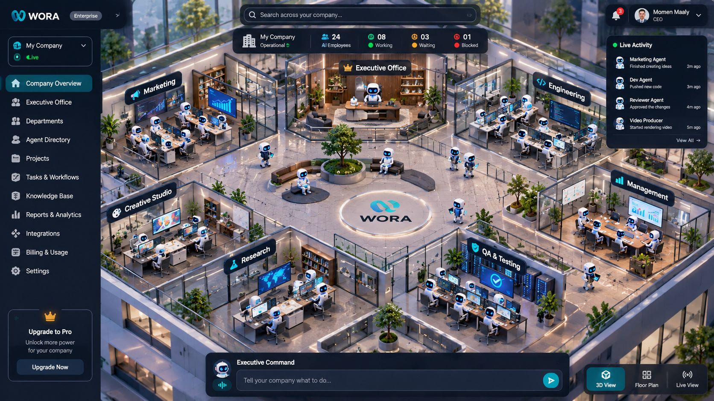
Expected differences (by design): no robots (006-B), no furniture (006-C), greybox-level materials, no bloom, background scenery simplified. Structural layout, camera framing, room ring, plinth, signs, fascia and back walls should align — check the overlay below.
3 · Overlay comparison — adjustable opacity
The rendered scene is stacked over the reference. Move the slider: 0 % = reference only, 100 % = render only. This uses the same committed pair as the app's dev inspector (which also has a live slider — see section 1).
A fixed 50 % blend is also committed as E03-reference-overlay-50-006A.png; the marker/edge alignment view is E04-camera-sign-alignment-006A.png.
4 · Close-up comparisons
Left: reference at the stated pixel window. Right: the 006-A render at the same window. Tags state the provenance of every visible element: MEASURED FIT EST. ASSUMED BY CONSTRUCTION
4.1 Building facade and curved parapet (window 1050,40 → 1470,360)
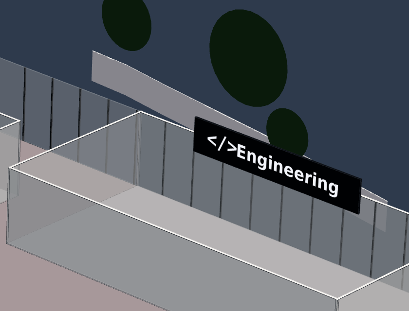
4.2 Facade band, lower-left +Z (window 200,540 → 700,941)

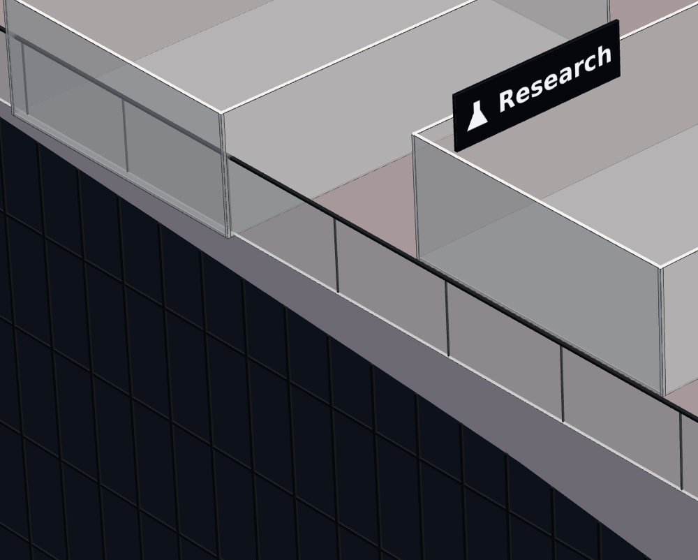
4.3 Facade band, lower-right +X (window 1230,520 → 1672,941)
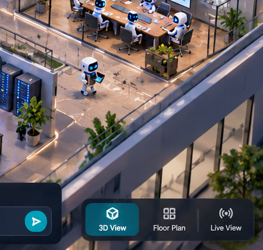
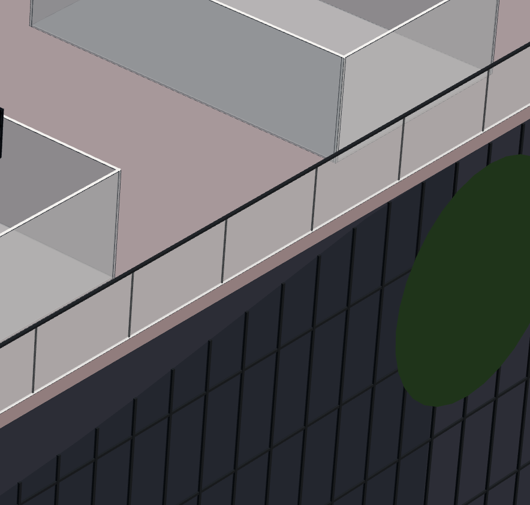
4.4 Glass partitions and balustrades (window 163,380 → 676,760 — Creative Studio)

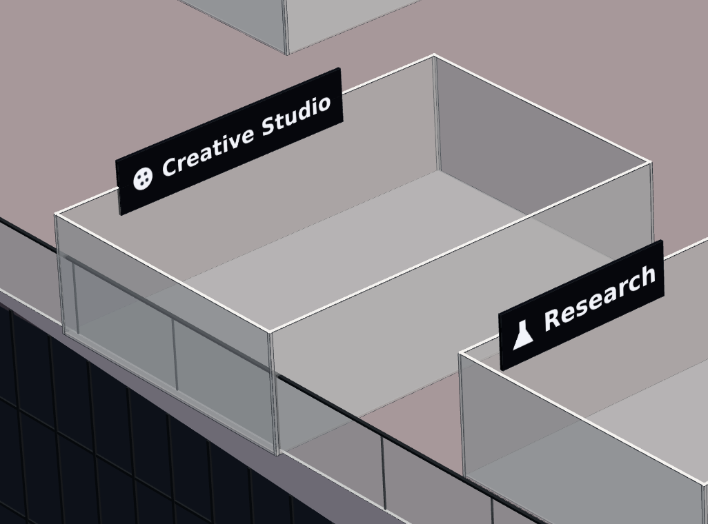
4.5 Atrium and walkways (window 560,300 → 1260,620)
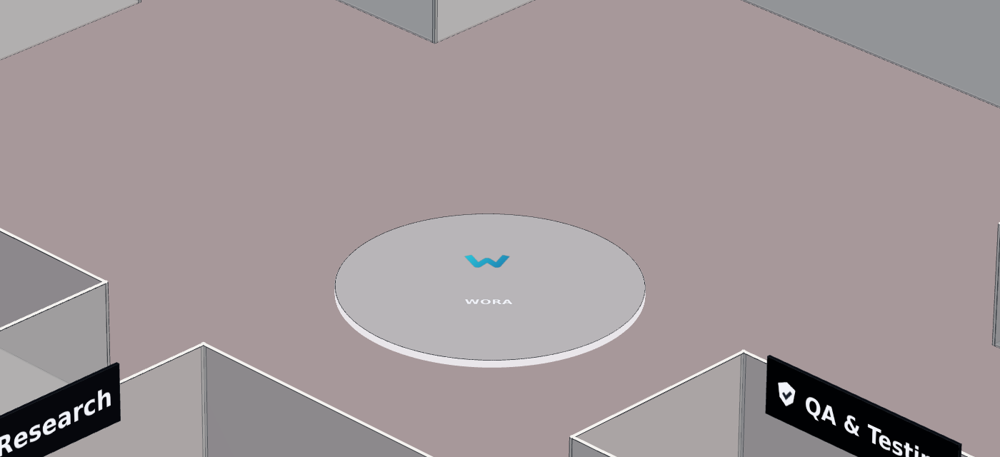
4.6 Plinth rim, logo and wordmark (window 740,410 → 1070,600)
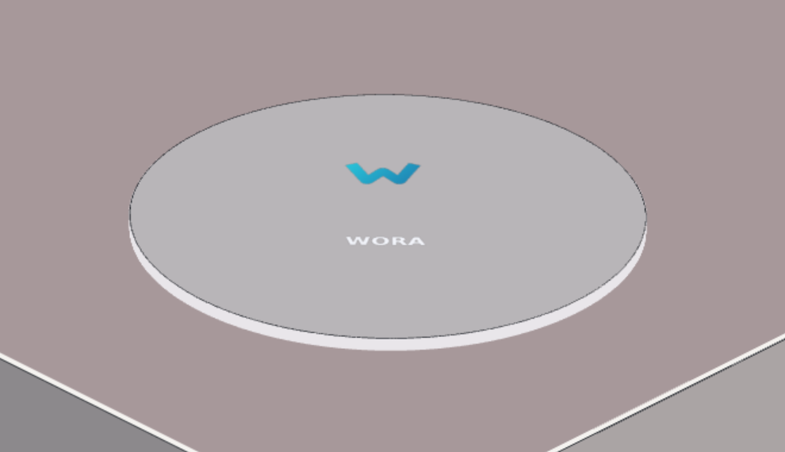
P-plinth-006A-overlay80.png.4.7–4.13 · All seven department signs
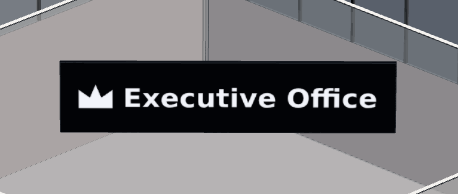
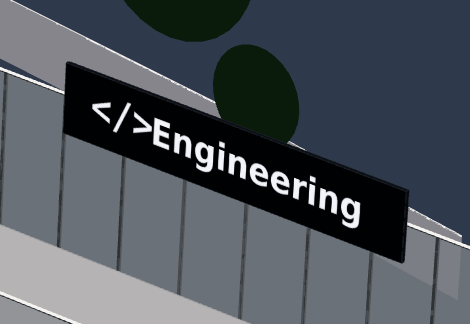
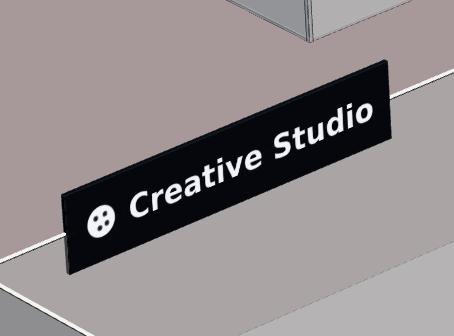
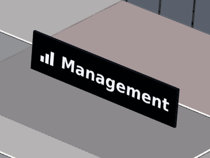
4.14 Lighting and environmental background

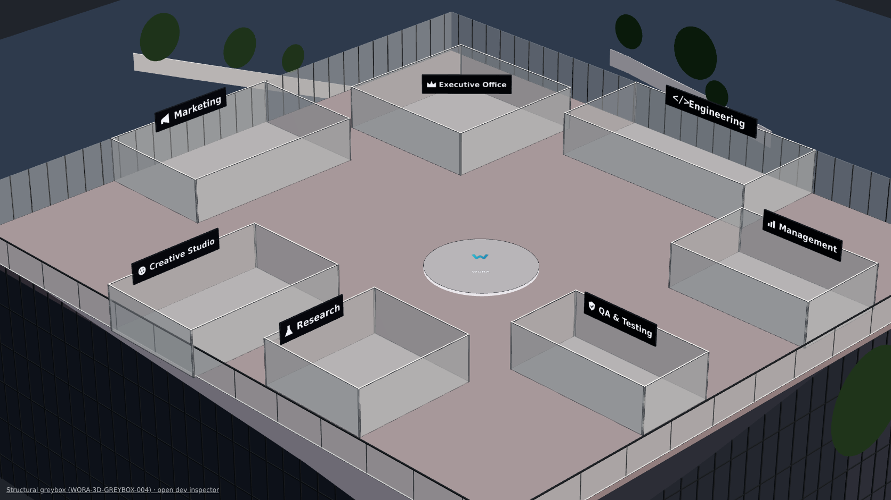
Right-side backdrop comparison: section 4.1. The large outdoor tree at the bottom-right frame edge is modelled as a simple canopy disc; the right-terrace greenery cluster (ENV-017) is omitted — its screen ray cannot be placed at a consistent 3D location (documented, not invented).
4-VF1 · Mission VF-1 (Materials & Lighting) — gate package (2026-11-20, owner-approved)
VF-1 changes appearance only — zero geometry changes (rendered check re-run: all six sizes byte-equal to 006-A; see greybox/data/rendered-check.json note). Flat measurement mode is byte-identical (test-enforced). Existing 47 tests preserved; 9 additive VF-1 audit tests added (56 total). Full-frame and phone evidence below; commit hash in the VF-1 report greybox/08-vf1-materials-lighting-report.md.
VF1.1 · Full frame — reference vs VF-1 render (side by side)
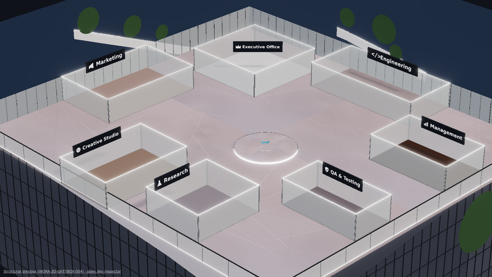
VF1.2 · Overlay — adjustable opacity (VF-1 render over reference)
VF1.3 · Material close-ups (identical pixel windows)
Atrium marble (window 560,300 → 1260,620) — VAC-LGT-04

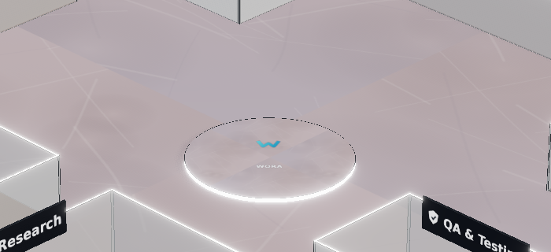
Glass partitions + balustrades (window 1050,40 → 1470,360 area; partitions window) — VAC-LGT-06
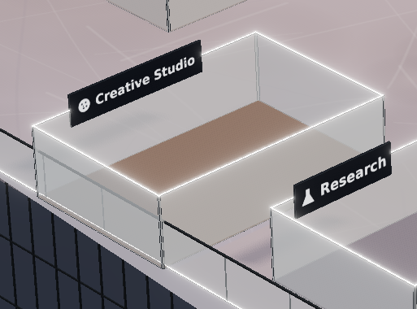
Plinth rim glow + bloom (plinth window) — VAC-LGT-03

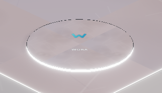
Fascia + curtain wall (window 1050,40 → 1470,360)

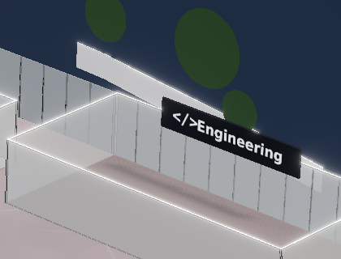
Facade band lower-left +Z (window 200,540 → 700,941)
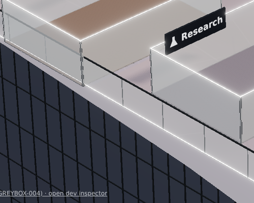
Backdrop mood (backdrop window)
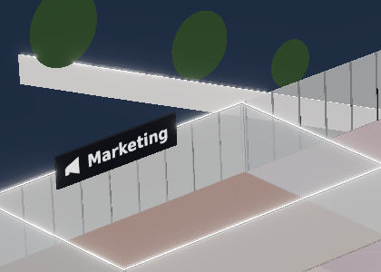
Department floors (DEPT-05 Management window) — floor tones
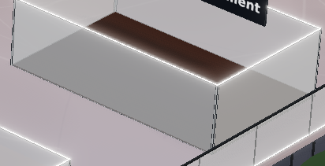
VF1.4 · Phone evidence — 412×915 @ DPR 2.625 (actual rendered output)
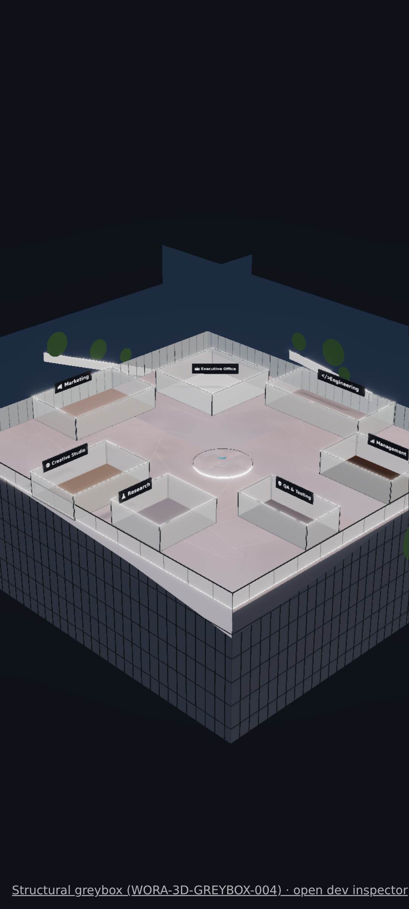
VF1.5 · Quantitative appearance comparison (same-patch medians, reference frame 1672×941)
| Patch | Reference | VF-1 render | ΔRGB (euclidean) | Reading |
|---|---|---|---|---|
| Marble left of plinth (700,520) | #B0A2AE | #B5A8AD | 7.9 | Base tone match |
| Marble below plinth (880,585) | #B6A6AD | #BDB0B3 | 13.6 | Close; vein/blotch distribution EST. |
| Marble right slab (1150,470) | #CCB2AC | #B6A9AD | 23.8 | Warm-zone placement not reproduced (pattern EST. — documented deviation) |
| DEPT-05 floor centre | #94A0C7 (furniture-contaminated: lit table blue cast) | #969597 | — | Comparison invalid vs furniture; albedo #805E4C matches catalogue by construction (test-enforced) |
VF1.6 · VF-1 deviations and unresolved items (complete)
| # | Item | Status |
|---|---|---|
| V1 | Marble vein pattern + warm-zone placement | EST. — pattern not recoverable at greybox resolution; base tones measured; seeded/reproducible |
| V2 | DEPT-01 Executive floor tone | UNRESOLVED — both 2026-11-20 probes furniture-contaminated (#664732 room median / #433E3E front band); neutral floor kept; owner may resolve with a clean pixel coordinate |
| V3 | PBR roughness/clearcoat/metalness/env intensities; HDR boosts ×6.0/×5.5; bloom threshold 3.0, intensity 0.5; shadow radius 4; tone mapping ACES | EST. styled after reference mood (Q-VF-02/03 defaults approved in plan); owner judgement requested at this gate |
| V4 | Robot/furniture materials (VAC-LGT-05) | Not applicable in VF-1 — robots/furniture not started (VF-4/VF-3); robot tokens already catalogued |
| V5 | Shadows: soft contact shadows to the lower-left | Key direction per LGT-02 observation (conf. Medium–Low); softness EST.; glass/backdrop/emissive excluded (test-enforced) |
| V6 | Bloom on screens/eyes (VAC-LGT-03) | Screens/eyes are robot/furniture scope; rim + strips bloom in VF-1 |
5 · Measured vs estimated vs assumed — provenance summary
| Element | Provenance | Source |
|---|---|---|
| Camera, footprints, plinth centre/radius, sign anchors, robot-marker data | MEASURED / BY CONSTRUCTION | Mission 003 solve; unchanged in 006-A |
| Fascia band bottom (+Z / +X) | FIT | Least-squares of the 2026-11-20 reference probe (rms 0.007 / 0.013 m) |
| Curtain-wall bay 0.96 m; plinth label boxes; material tone samples | MEASURED | Reference probe (scratch, image read-only) |
| Transoms 2.0 m; balustrade rail/posts (2.4 m bays); glass tones; sign typography and icons; logo/word artwork; lighting tone | EST. | Styled after the reference; marked est. in the JSON |
| Scenery planes (city, parapet, canopy discs); −X/−Z fascia thickness 0.45 m; back-wall height | ASSUMED | Q-ARCH-06 open; positions by construction in HOME |
6 · Known deviations and unresolved items (complete list — nothing hidden)
| # | Item | Status |
|---|---|---|
| 1 | +X lower-edge angle: reference 3–10° steeper | Accepted by owner (CR-01); edge grid-aligned at x = 14.6; fascia follows the measured band bottom |
| 2 | SIGN-02 +3.5°, SIGN-03 −5.1° angle residuals | Kept by owner (CR-05); visible in 4.7–4.13 |
| 3 | Scenery plane distances | Assumptions (Q-ARCH-06); scenery lands below y = 0 on distant planes (all in-frame rays point below the horizon); invisible in HOME, visible in free orbit |
| 4 | −X/−Z mullions, transoms, post bays, fascia thickness | Styling estimates (no measurable reference lines there) |
| 5 | Sign typography/icons, logo/wordmark artwork | Greybox-level glyphs; exact artwork = art pass |
| 6 | Bloom / glow around rim, strips, screens | Deferred to the art pass (Q-3D-07 decided: emissive now) |
| 7 | LGT-01/02 mood and shadow direction | Approximate tone-only lighting; owner visual judgement requested in this review |
| 8 | ENV-017 right-terrace greenery | Omitted (ray cannot be placed consistently); can be re-scoped into 006-C |
| 9 | Robots (47), furniture, plants, screens, doors | Intentionally absent — 006-B / 006-C scope, not started |
| 10 | Executive Office interior/plan | Square greybox only (CR-07: final geometry unresolved, not confirmed) |
7 · Responsive framing renders (desktop sizes; phone = live link)
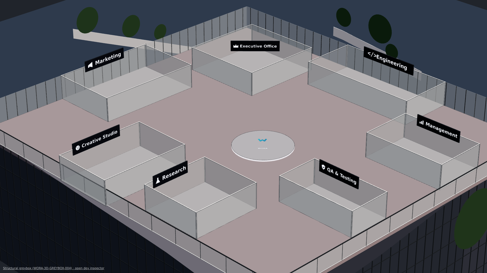
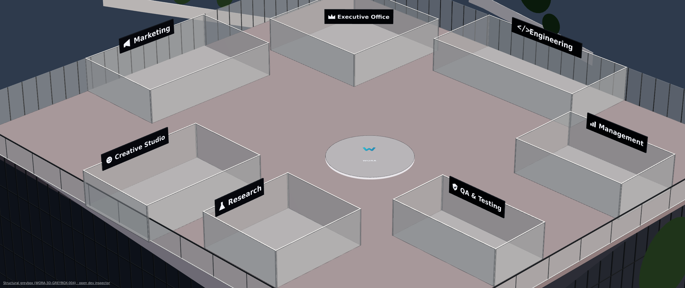
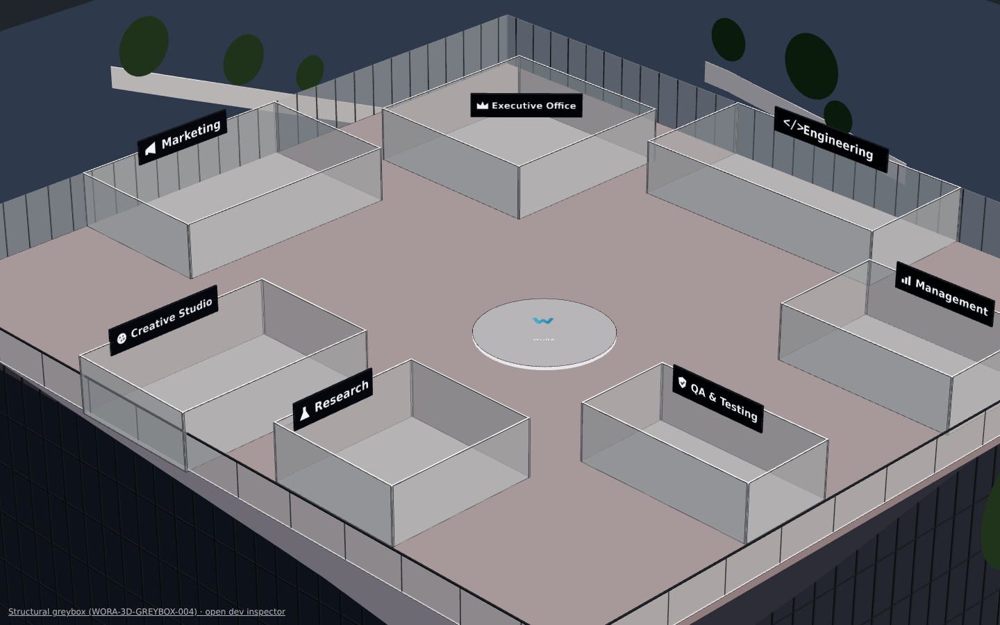
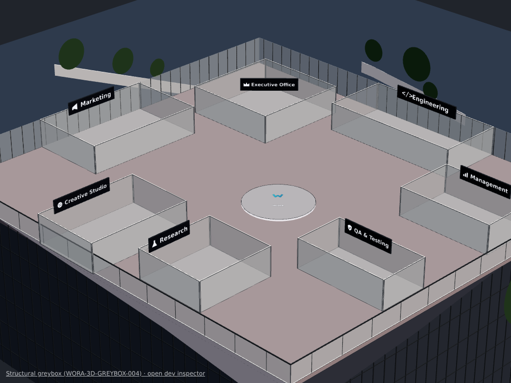